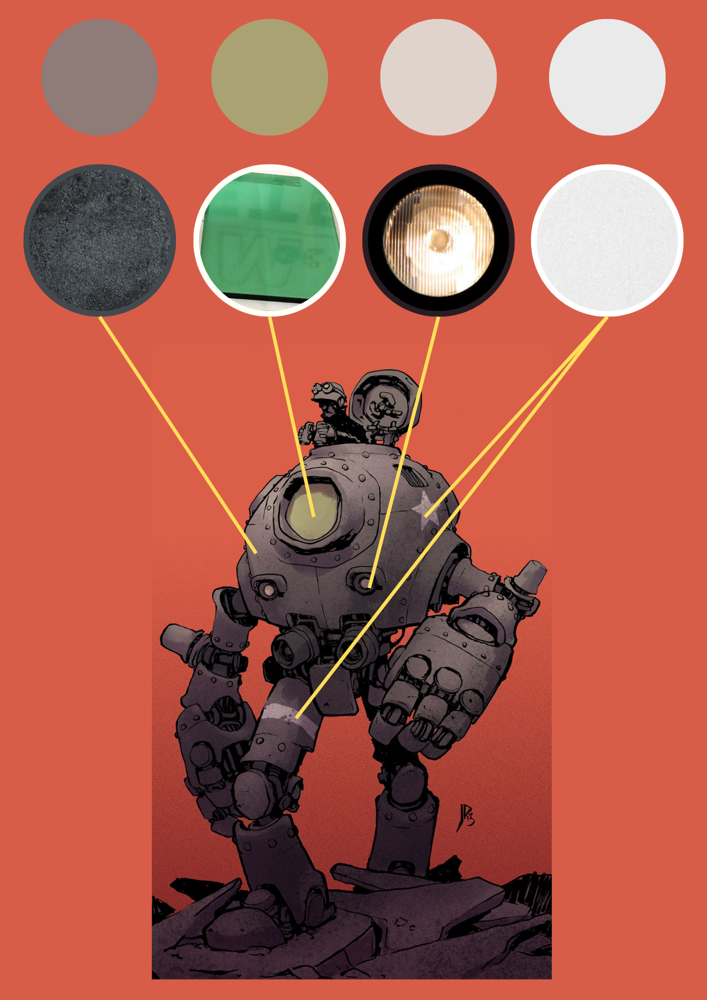
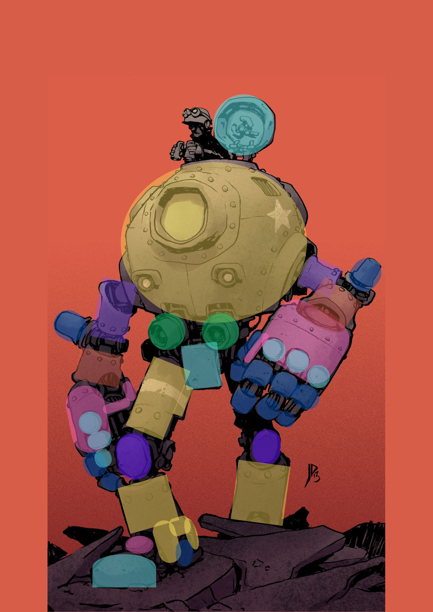
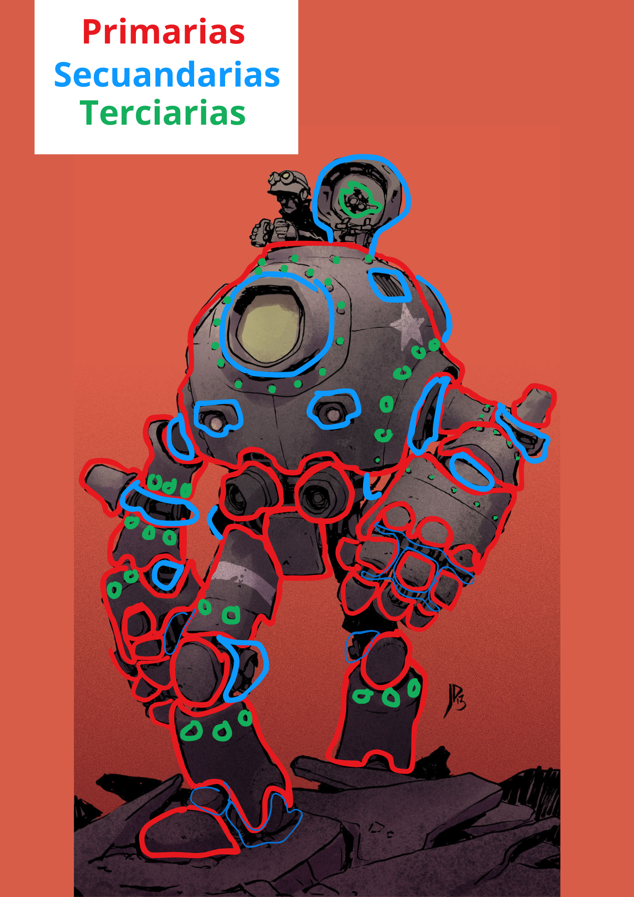
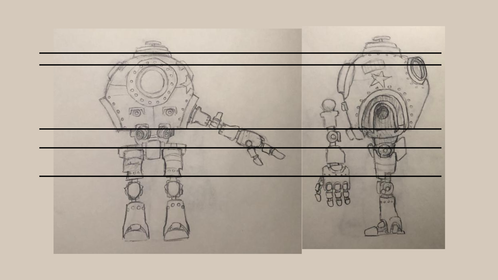

Antes de abrir el software 3D, el primer paso para lograr un modelo creíble es entender de qué está hecho. Realicé una investigación exhaustiva de referencias visuales para identificar todos los materiales que el robot iba a necesitar: metales desgastados, pintura desconchada, plásticos rígidos y zonas de óxido.
Este estudio de superficies (surface breakdown) me permitió planificar con antelación cómo reaccionaría la luz sobre cada pieza, garantizando que el texturizado final tuviera la profundidad y el realismo adecuados.

Todo modelo 3D complejo, por más detallado que sea, nace de la combinación de figuras primitivas. Procedí a hacer un paintover sobre el concepto original para identificar la estructura base del robot.
Desglosé el diseño en formas primarias (la silueta principal y volúmenes grandes), secundarias (articulaciones y paneles de transición) y terciarias (detalles finos como tornillos, bisagras y ranuras). Este paso es crucial en el modelado 3D; al entender el diseño como un rompecabezas de figuras geométricas básicas, planificar la topología y el flujo de bordes (edge flow) en Maya se vuelve un proceso lógico y limpio, evitando problemas de malla (mesh) en etapas posteriores.


Tener solo una vista en perspectiva de un concepto suele engañar al ojo a la hora de modelar los volúmenes reales. Para solucionar esto, realicé dibujos a mano del robot estableciendo vistas ortográficas exactas: de frente, de perfil y una vista en "Pose A".
Estas imágenes son fundamentales para cargarlas en las cámaras ortográficas (Front/Side) de Maya. Me permitieron medir proporciones milimétricamente, asegurar que las piezas encajaran mecánicamente entre sí y mantener la fidelidad absoluta con el peso y el volumen del diseño de Jake Parker.

Con toda la planificación lista, el proceso en Maya fue estructurado y eficiente. Modelé utilizando técnicas de hard-surface, cuidando la topología de cuatro lados (quads) y controlando la tensión de los bordes para mantener curvas limpias bajo subdivisión.
Una vez terminado el modelo y tras realizar un despliegue UV (UV Unwrapping) optimizado, pasé a la fase de texturizado. Un requerimiento estricto de este proyecto era generar los mapas de textura exclusivamente en Adobe Photoshop. Aprovechando mi investigación de materiales inicial, pinté a mano los mapas de color, desgaste y especularidad mediante un sistema organizado de capas, modos de fusión y máscaras, demostrando adaptabilidad técnica en flujos de trabajo específicos (pipelines).
El resultado es un modelo mecánico sólido, texturizado a medida y listo para ser riggeado o integrado en un motor de videojuegos.